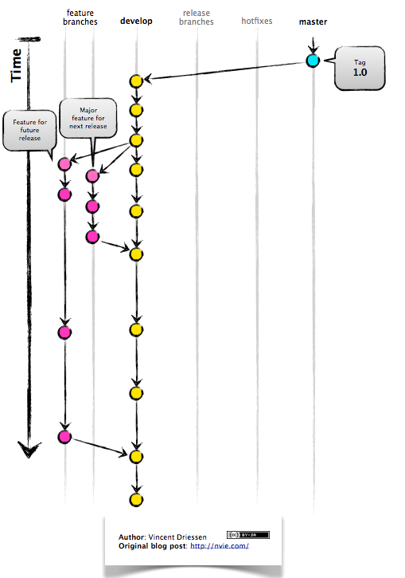
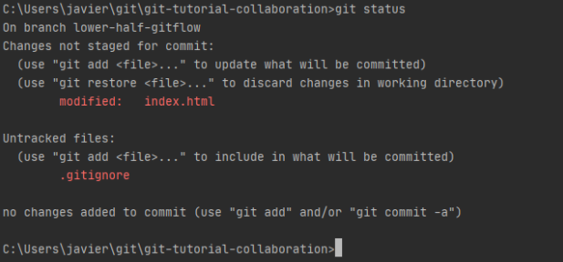

GitFlow
GitFlow is at the very basic level a branching model by Vicent Driessen. According to Kumer, “git-flow are a set of git extensions to provide high-level repository operations for Vincent Driessen's branching model.
Gitflow works best under environments that have schedule release cycles. Branches can be created for specific features, for upcoming releases, and even future releases all simultaneously.
Benefits of using gitflow:
- Parallel Development
- Collaboration
- Release Staging Area
- Support For Emergency Fixes
Some basic commands when using git flow include
-
git flow init -
git flow feature start <featureName> -
git flow feature finish <featureName> -
git flow feature publish <featureName>
Repository
A git repository is the .git folder withing your project directory. It contains all of the modifications you've made in your project. It is the storing of this history that makes git such a powerful tool. Using this history we are able go back to previous version and save the current version while we make new changes so we don't overwrite anything or accidentally mess anything up. We can store our Git repositories locally on our machines or use online hosts like Github which take advantage of Git repositories to allow for collaboration.
We can initialize an repo using git init
We can add file to the repo for tracking using git add <file-name>
Clone
Just as the name implies Clone (git clone) allows us to clone, or create a copy, of a repository. We can even clone parts of the repository while leaving other parts alone, we'll get to this in branching. We often use clone to grab a copy of a remote repository and put it onto our local machine.
To clone a repo we use the following command git clone <repo-name>
Fork
Forking like cloning creates a copy of the repository in question. The important distinction being that cloning creates a copy on our local machine whereas a forking a repo will create a copy of that repo on your own github account.
To fork a github repo go ahead and navigate to it and click the fork button on the top right side of the screen.

Branch
Branches in git allow us to work on parts of our code independently from others. For example, if you want to add a new feature while maintaining your current code you may want to create a new branch and add that feature there. Branches are often used to add in new features and are especially useful when used for collaboration through a remote repo. Each member of the team may create a new branch and add in their own unique features and then merge the code.
To create a new branch in your repo go ahead an use this command git branch
<branch-name>
Commit
We can imagine each branch as a line with many snapshots of our code that together create a detailed history of our project. It is these snapshots that allow us to move back in time to older code that we may saved. This process of saving and creating new snapshots is what is called committing. When we commit a change to our branch imagine a new snapshot popping onto that line of history. It also helps to leave message detailing what new changes were made in this commit so that we know what we are looking at if we look back
The following command allows to create a commit within our git repo git commit -m "<message
detailing our work>"
Merge
Having a branch for a new feature is a great and useful idea but at some point we want to combine it all especially before sending it out into the world. This is where the merge command comes in, merge allows us to put all of our branches together into a branch of our choosing. The merge command will merge the branch of our choosing to the branch we are currently on.
You can merge branches using the following command git merge <branch-name>
Checkout
A Checkout is the process of switching between branches while using git. Atlsassian puts it as, “a "checkout" is the act of switching between different versions of a target entity. The git checkout command operates upon three distinct entities: files, commits, and branches. In addition to the definition of "checkout" the phrase "checking out" is commonly used to imply the act of executing the git checkout command.”
By default, when using git, you are in the master branch. There must be an already existing branch in order to execute the checkout command.
A new branch can be created by typing the following command:
-
git branch <exampleBranch>
Since exampleBranch exists we can switch into that branch. If exampleBranch did not exist we would have gotten an error message
A simple way to switch into a new branch without having an existing branch by using the following command
-
git checkout -b <exampleBranch1>
Here, “git checkout -b” is the command and “exampleBranch1” is the new branch that we are creating. Since we use “-b” this command creates a new branch and because of checkout we switch into that new branch automatically.
Push
Git push is a command that allows you to upload your local edited code to a remote repository. If you made many commits, writing git push would upload and “push” your commits to the remote repository.
Git Push can be used as follows
-
git push <remote> <branch>
<remote> being the remote repository
<branch> being the current branch you are on or the branch that you wish to upload to the remote repository.
Pull
When starting a project locally you might have code in a remote repository. In order to retrieve that code, git pull downloads the code from the remote repository into your local files. Git pull is the opposite of git push.
Git pull can be used as follows
-
git pull <remote>
Where <remote> is the name of the remote repository.
Remote Add / Remove / Show
We mentioned pushing and pulling from a remote repository. In order to tell Git which repository we want to pull or push from we need to tell git by using the git remote add command.
-
git remote add <name> <url>
<name> is the name you choose to name the remote repository. By default, many people name the remote repository as “origin”
<url> is the url of the remote repository. It is an https link.
Since we are able to add repositories we can also remove them. This can be done as:
-
git remote remove <name>
Where <name> is the name you assigned to the remote repository when adding it.
If we were to forget what we named the remote repository we are pushing or pulling from we use the following command.
-
git remote show - If we name the remote repository “origin” then, this command would output origin.
If we wanted to know the url of the remote repository, then a similar command would be needed.
-
git remote -v
This command would display the remote url.
Status
Git status is a command that allows you to see the status of your current branch. Since the last commit was made, any new changes would appear when this command is typed. Git status also displays the branch you are currently working on. The following image shows what the “git status” command displays.
Overall the “git status” command displays the following:
- Current branch
- Changes staged for commit
- Changed not staged for commit
- Untracked files
Master Branch
The master branch is the default branch that you are in when you create a new local git repository. Every time a commit is made in the master branch, you will still be in this branch. The master branch is not in any war or form special from other branches that you may create.